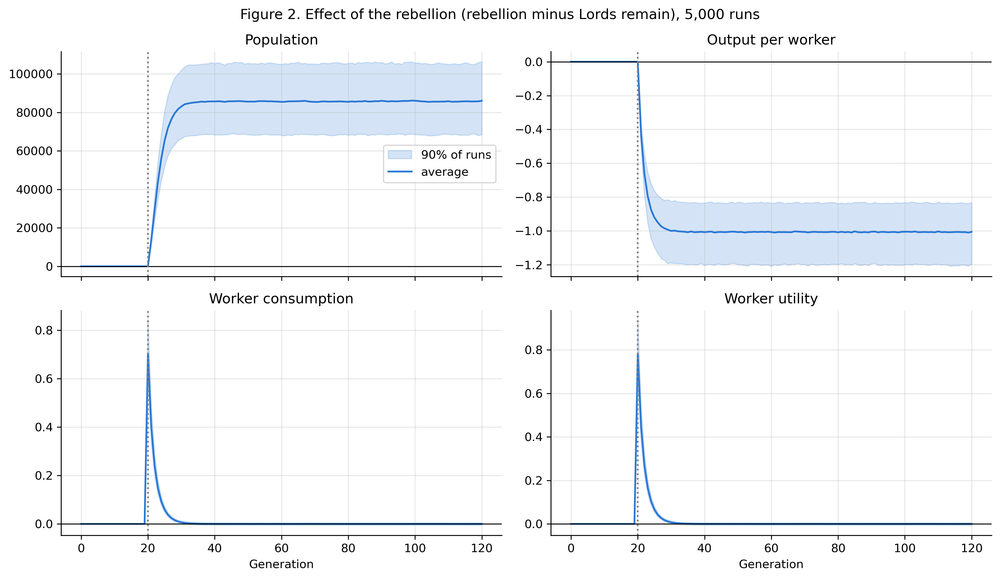

Who keeps the gains?
For ECON 324: Western Economic History at Northwestern, I studied how redistribution interacts with population growth in a preindustrial economy. Two scenarios start from the same equilibrium: the elite keeps extracting 50% of output, or workers eliminate that extraction in generation 20.
I combined an analytical equilibrium solution, deterministic transition dynamics, and 5,000 Monte Carlo simulations per scenario. The question is what happens to workers’ living standards once population has time to respond.
- My work
- Economic model, simulations, analysis, and paper
- Course
- ECON 324: Western Economic History
- Tools
- Python, NumPy, pandas, Matplotlib, and Jupyter
From household choices to population
Produce and redistribute
A Cobb–Douglas production function combines labor with fixed land. Removing extraction lets workers retain all their output.
Consume and raise children
Households divide retained income between consumption and children. Higher income increases both.
Adjust over generations
More workers share the same land. Diminishing returns lower output per worker until consumption returns to its original level.
The notebook follows generations 0–120. Harvest shocks and Poisson demographic noise add uncertainty; both scenarios share harvest shocks, with fixed random seeds for reproducibility.
Follow the equations
Production on fixed land
Yt = A Ltα H1−α
Y is output, L is workers, H is land, and A is technology. With α = 0.65, adding workers raises total output but lowers output per worker.
What a worker keeps
wt = (1 − τt) Yt / Lt
The elite’s share τ falls from 0.50 to zero at rebellion. Output and population cannot jump immediately, so retained income w doubles.
How households respond
ct = 0.70 wt · nt = wt
Lt+1 = nt Lt
Households spend 70% of income on consumption and 30% on children. With child cost ρ = 0.30 and preference weight γ = 0.30, expected surviving children n equals retained income in these model units.
Why the gain fades
ct / c* = 2(0.65t)
Here t counts generations since rebellion and c* = 0.70. As t increases, 0.65t tends to zero and the consumption ratio tends to one. A stationary population requires n* = 1, so w* = ρ / γ = 1 regardless of extraction.
More people, the same consumption per worker
Eliminating extraction doubles consumption immediately. In the baseline model, the gain falls below 1% after ten generations. The long-run economy supports more people and produces more output, while consumption per worker returns to 0.70 in the model’s units.
- Immediate consumption gain
- 100%
- Long-run population
- 7.25×
- Long-run total output
- 3.62×
Population and output ratios compare the analytical equilibria without and with extraction. Across the tested sensitivity settings, the average consumption gain falls below 1% within 5–15 generations.
Does the pattern survive uncertainty?
The stochastic simulation adds harvest and demographic shocks. Its baseline mean consumption gain also falls below 1% after ten generations. Sensitivity experiments vary harvest volatility, the labor exponent, preferences for children, and initial extraction, using 1,000 runs per scenario.

Interpreting the result
The assumptions are part of the answer.
The original study is an illustrative model of a Malthusian economy. Land, technology, and household preferences stay fixed within each scenario; the model omits capital accumulation, migration, institutional change, and the destruction associated with conflict. The lab’s continual-innovation experiment extends the fixed-technology assumption.
The finding concerns workers’ per-person living standards under those assumptions. It is not an empirical estimate of a historical rebellion, a prediction for a modern economy, or a measure of total social welfare.
Read the paper. Reproduce the analysis.
- The Paradox of Equality — paper (PDF)The economic argument, results, appendix, and references.
- Python notebookEquilibrium checks, transition dynamics, Monte Carlo results, and sensitivity experiments, with saved outputs.
- Repository and reproduction guideSource files, Python requirements, figures, tables, and instructions to run the analysis.
Study results come from the public project README and notebook. The opening walkthrough uses the deterministic baseline; lab experiments recalculate the model with your chosen parameters, including an optional continual-innovation extension. The figure above is the notebook’s original Monte Carlo output.